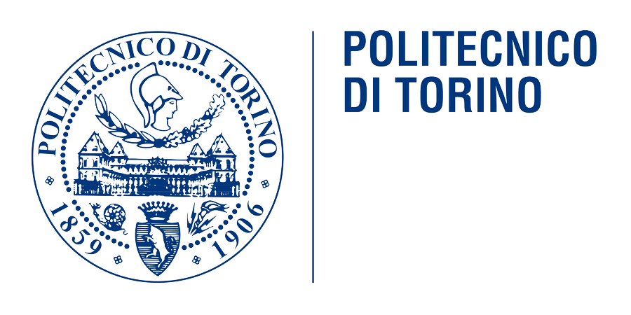

Discussione di Laurea Magistrale · A.A. 2025–2026
DreamWalking
Decodificare oggetti immaginati, dall'EEG al 3D: un loop di co-immaginazione uomo-macchina.
Matteo Sipionecandidato
Silvia Braccocandidata
A. Sanna · F. Manurirelatori
Politecnico di TorinoIngegneria del Cinema e dei Mezzi di Comunicazione
DreamWalking
Un mondo immaginato,
condiviso.
Grazie. Matteo Sipione e Silvia Bracco
Politecnico di Torino · Ingegneria del Cinema e dei Mezzi di Comunicazione · A.A. 2025–2026
Relatori: Prof. A. Sanna · Prof. F. Manuri
Comandi
→Spazio avanti (passo / dive) ← indietro
O mappa 1–9 vai al blocco Home intro End fine
F schermo intero T reset timer B luce/buio ? chiudi
Click a destra = avanti · a sinistra = indietro · su un nodo = dive